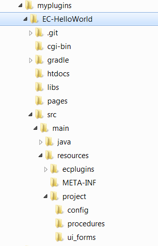
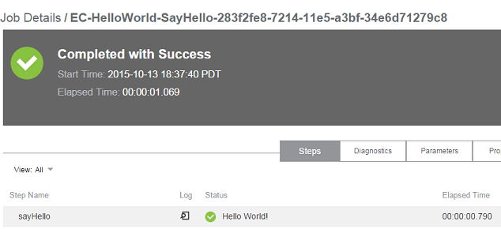
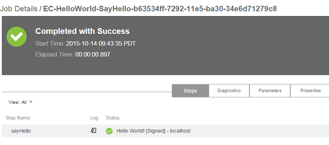

Quick Start
This quick start guide will walk you through the steps for enhancing and packaging a hello world ElectricCloud plugin to introduce you to the process of building and developing the ElectricCloud open source plugins.
You will need the following to follow along with the quick start guide:
- JDK 7 or higher
Open a terminal and check the JDK version on your system by running:
java -version
If you do not have the right JDK version, download and install it on your system. - Git or GitHub Desktop
You can use Git directly from the command line or you can use GitHub Desktop on Mac and on Windows. Please install and set up Git and GitHub Desktop(if required) before continuing with the guide.
- Access to an ElectricFlow server
We will install a hello world ElectricCloud plugin as part of this quick start guide, so you should have access to a running ElectricFlow server with privileges to install plugins on it.
Checking out from Github
The quick start guide uses EC-HelloWorld, a simple hello world plugin, so we start by checking it out from GitHub.
If you are using Git directly, then run the following commands to get the EC-HelloWorld plugin code on your system.
mkdir myplugins cd myplugins git clone https://github.com/electric-cloud/EC-HelloWorld.git
Or, if you are using GitHub Desktop, then you can clone the plugin code by clicking on the button in the Github EC-HelloWorld plugin repository.
At this point, you should have the complete EC-HelloWorld plugin code on your system in a myplugins/EC-HelloWorld directory with the directory structure looking like this:

Building the plugin
Go to the myplugins/EC-HelloWorld directory and run the following command.
gradlewSince this is the first time you are building the plugin, it might take close to a minute to build the plugin since the GWT classes need to be compiled. Subsequent builds should not take more than a few seconds to complete.
Once the build has completed successfully, you can find the plugin jar inside build/EC-HelloWorld/ within the myplugins/EC-HelloWorld directory.
Installing the plugin
Lets do a quick check to make sure that our plugin works as promised before we make our enhancements to the plugin. Start by installing the plugin jar on the ElectricFlow server using these steps:
- Login to the ElectricFlow server
- Go to Automations->Administration->Plugins
- Select the Install from File/URL tab
- Choose the plugin jar file from myplugins/EC-HelloWorld directory and click the Upload button to install the plugin.
Once the plugin is installed, you can view it on the Currently Installed tab on the Plugins page. Lets try out the plugin using the following steps:
- Click on the EC-HelloWorld plugin link on the Plugins page.
- Click on the SayHello procedure.
- Select the Run->Run Immediately option.
The plugin procedure job should complete successfully with the expected 'Hello World': 
Enhancing the plugin
Now lets make a small enhancement to the plugin code and see how we would build the plugin again with the change and install it.
Start by opening the file myplugins/EC-HelloWorld/src/main/resources/project/procedures/sayHello.pl in your favourite text editor. This is the Perl script that prints 'Hello World' when we run the SayHello procedure. Update the script by adding the first 3 lines before the 'Hello World' message is printed.
# Sign the message with the host name of the agent running the procedure
my $hostName = "$[/myResource/hostName]";
$msg .= " [Signed] - $hostName";
# Add the above 3 lines before this block
# Set the message in the job summary as well as print it in the step logs.
$ec->setProperty("summary", $msg . "\n");
print $msg;
Lets rebuild and install the plugin now.
- Go to the myplugins/EC-HelloWorld directory and run:
gradlew
Once the build has completed successfully, you can find the updated plugin jar inside build/EC-HelloWorld/ within the myplugins/EC-HelloWorld directory. - Install the updated plugin jar on the ElectricFlow server using the steps described earlier.
- Run the SayHello procedure again.
The plugin procedure job should complete successfully with our enhanced 'Hello World' message: 
Next steps
We have only just scratched the surface with this Quick Start guide. There is a lot you can do with plugins. You can learn more about the ElectricCloud open source plugins here.
Building and deploying the plugin
We use a gradle plugin to compile, test and install our plugins.
To clean prior build artifacts
gradlew clean
To compile the plugin
gradlew
Install the plugin
Note: ectool is needed to for this functionality. Find more information on how to install ectool here.
Set the COMMANDER_HOME environment variable
These commands set the COMMANDER_HOME environment variable for the current terminal session and sets it to the default ElectricFlow install directory.
Windows:
set COMMANDER_HOME=C:\Program Files\Electric Cloud\ElectricCommanderLinux:
export COMMANDER_HOME=/opt/electriccloud/electriccommander
CAUTION: This will install the plugin to the specified ElectricFlow server. It is highly recommended to use a development ElectricFlow server during plugin development.
gradlew -PcommanderServer=[serverAddress] -PcommanderUser=[userName] -PcommanderPassword=[password] deploy
Getting involved
We value contributions whether it’s documentation, bugfixes, new features or improved test coverage. We follow the GitHub pull request model described here.
More information
The GitHub Flow guide by Github
18F has has a detailed guide on how to use Github and send a pull request.